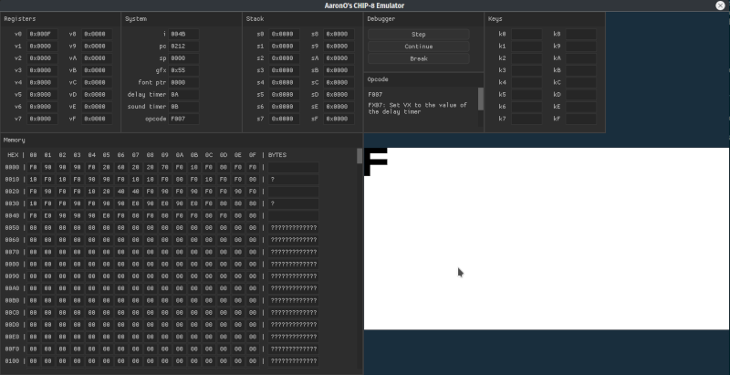
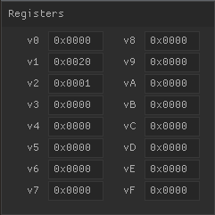
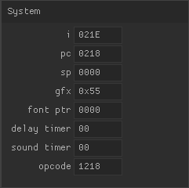
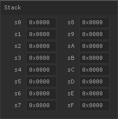
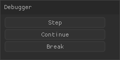
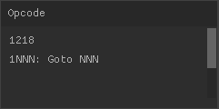
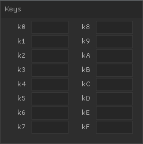
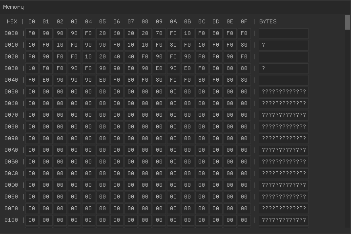

Debugger
This emulator includes a graphical debugger!

Registers

Displays the state of all CHIP-8 registers.
System

Displays the state of various CHIP-8 system components, including:
- i: special pointer into system memory
- This is used by some opcodes. It contains an index into CHIP-8 system memory.
- pc: program counter
- The next instruction to execute. It contains an index into CHIP-8 system memory.
- sp: stack pointer
- Head-of-stack pointer, containing the index of the stack register that is the current head.
- gfx: pointer to beginning of graphics memory
- It contains an index into CHIP-8 system memory where display memory begins. This will typically be static throughout the lifecycle of a program.
- font ptr: pointer to beginning font memory
- It contains an index into CHIP-8 system memory where font sprite data begins. This will typically be static throughout the lifecycle of a program.
- delay timer
- It contains the value of the delay timer.
- sound timer
- It contains the value of the sound timer.
- opcode: current instruction about to be executed.
- It contains the 16-bit instruction previously pointed to by the program counter (pc).
Stack

Displays the state of the stack registers.
- Each stack pointer, when not zero, contains a 16-bit index into system memory that acts like a pointer. Each of these values represents where the program counter (pc) was pointing to before the stack was pushed onto. The stack is how the CHIP-8 supports function calls.
Debugger

Step
Proceed one CHIP-8 instruction.
- This means the currently decoded opcode executes, then the next instruction is fetched and decoded.
Continue
Resume program operation as if the debugger had not been invoked, but leave the debugging UI available.
Break
Halt program execution so the current opcode finishes executing and the next instruction is fetched and decoded.
Opcode

Displays the last 16-bit instruction the pc was pointing at.
- This also contains the "high level" opcode function name and a description of what the opcode does.
Key Mapping

Displays the state of each key in the CHIP-8 system; either "PRESSED" or not pressed (empty).
Memory

The entire contents of CHIP-8 memory, laid out byte-by-byte.
Display Window
Shows the output of the CHIP-8 system.